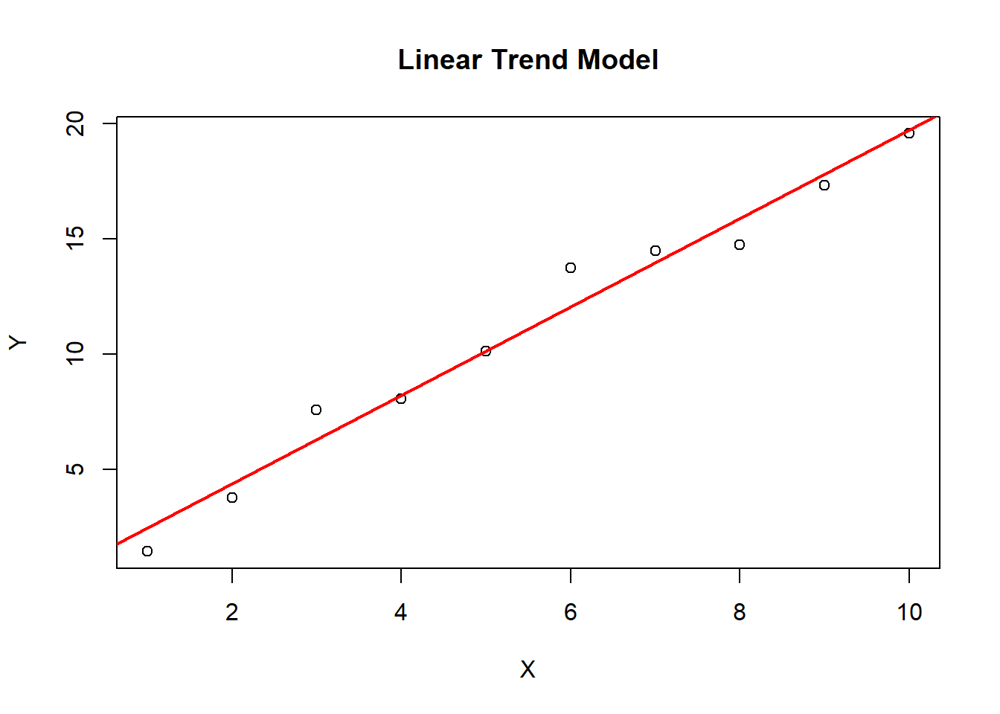

Chapter 9 Time Series Analysis
9.1 Trend Models
9.1.1 Linear Trend Models
The linear trend is a statistical concept used to describe the relationship between two variables that appear to be linearly related. In a linear trend, the change in one variable is directly proportional to the change in the other variable.
A linear trend can be represented by a straight line on a scatter plot, with the slope of the line indicating the degree of the relationship between the variables. The slope of the line represents the rate of change of the dependent variable for each unit of change in the independent variable. If the slope is positive, it means that the dependent variable increases as the independent variable increases. If the slope is negative, it means that the dependent variable decreases as the independent variable increases.
Linear trends are commonly used in time series analysis to model the long-term behavior of a variable over time. In this context, the slope of the trendline represents the average rate of change in the variable over time.
One important assumption of linear trends is that the relationship between the variables is constant over time. If the relationship changes over time, a linear trend may not accurately capture the underlying pattern in the data. In such cases, more complex models, such as nonlinear trends or seasonal models, may be needed to better model the data.

9.1.3 Major Limitation of Trend Models
Both linear trend models and log-linear trend models are susceptible to Serial Correlation or Autocorrelation. Serial correlation and autocorrelation are often used interchangeably, but there is a subtle difference between the two. Serial correlation refers to the relationship between two consecutive observations in a time series. It is also known as first-order autocorrelation, as it measures the correlation between a variable and its immediately preceding value. On the other hand, autocorrelation refers to the correlation between observations at different lags or time intervals. It measures the correlation between a variable and its past values at various time lags. In other words, serial correlation is a special case of autocorrelation, where the lag between observations is fixed at one. Autocorrelation, on the other hand, can include correlations at multiple lags. Both serial correlation and autocorrelation are important concepts in time series analysis, and they are often used to identify patterns and trends in data, as well as to develop forecasting models.
9.1.3.1 Dealing With Serial Correlation - The Durbin Watson Test
The Durbin-Watson test is a statistical test used to detect the presence of autocorrelation in the residuals of a regression model. Autocorrelation occurs when the residuals of a regression model are not independent of each other, which violates one of the assumptions of the model.
The Durbin-Watson test is based on the test statistic d, which is calculated as the ratio of the sum of squared differences between adjacent residuals to the sum of squared residuals. The test statistic d has a value between 0 and 4, with a value of 2 indicating no autocorrelation, a value less than 2 indicating positive autocorrelation, and a value greater than 2 indicating negative autocorrelation.
The null hypothesis of the Durbin-Watson test is that there is no autocorrelation in the residuals, while the alternative hypothesis is that there is autocorrelation. The test is often conducted at a significance level of 0.05.
A Durbin-Watson test result of 2 indicates no autocorrelation, while values less than 2 indicate positive autocorrelation and values greater than 2 indicate negative autocorrelation. A test result of close to 0 or 4 indicates strong autocorrelation.
The Durbin-Watson test is commonly used in regression analysis to assess whether the model assumptions are met, and to determine whether autocorrelation is present in the residuals of the model. If autocorrelation is present, it may be necessary to adjust the model or use a different model that accounts for the autocorrelation.
9.2 ARIMA Models
9.2.1 Autoregressive (AR) Processes
9.2.1.2 Covariance Stationary
In time series analysis, a stationary time series is one whose statistical properties such as mean and variance remain constant over time. A covariance stationary time series is a type of stationary time series that is widely used in time series analysis.
A time series is said to be covariance stationary if its mean, variance, and autocovariance structure do not change over time. This means that the statistical properties of the time series are constant over time and the process generating the data is stable over time.
Covariance stationary time series have some important properties that make them suitable for many time series analysis techniques. For example:
The mean and variance of the time series can be estimated accurately and consistently over time, making it easier to interpret the data and make predictions.
The autocovariance structure of the time series can be estimated accurately and consistently over time, making it possible to model the time series using techniques such as autoregressive (AR), moving average (MA), and autoregressive moving average (ARMA) models.
The distribution of the time series is also constant over time, which simplifies the application of statistical tests and enables more accurate inference.
In contrast, non-stationary time series exhibit statistical properties that change over time, which can make it difficult to analyze and model them accurately. Common examples of non-stationary time series include those with trends, seasonal patterns, and other forms of time dependence.
Therefore, transforming non-stationary time series into stationary time series is often necessary before applying many time series analysis techniques. This can involve techniques such as detrending, deseasonalizing, or differencing the data to remove the time-dependent components and make the series stationary.